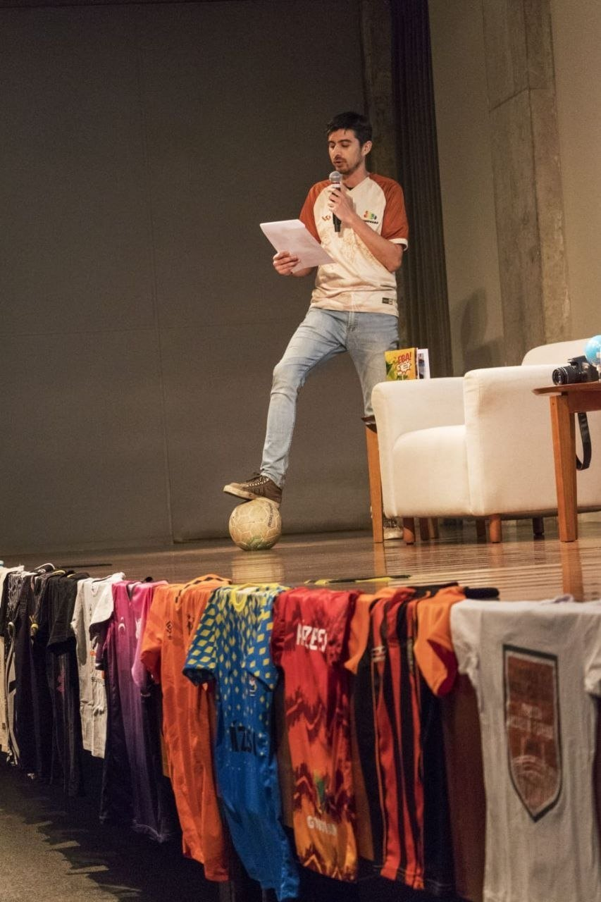
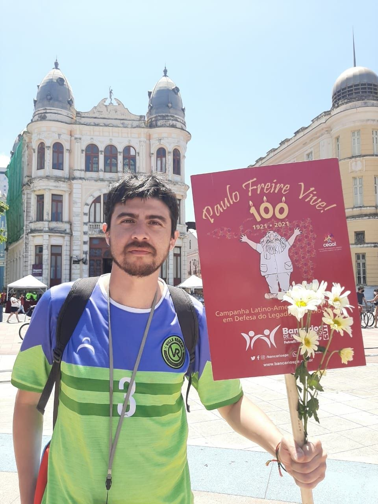
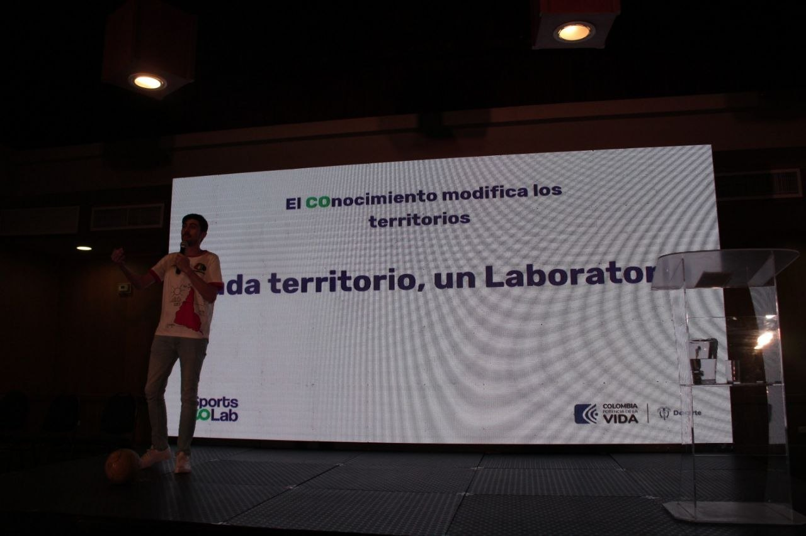
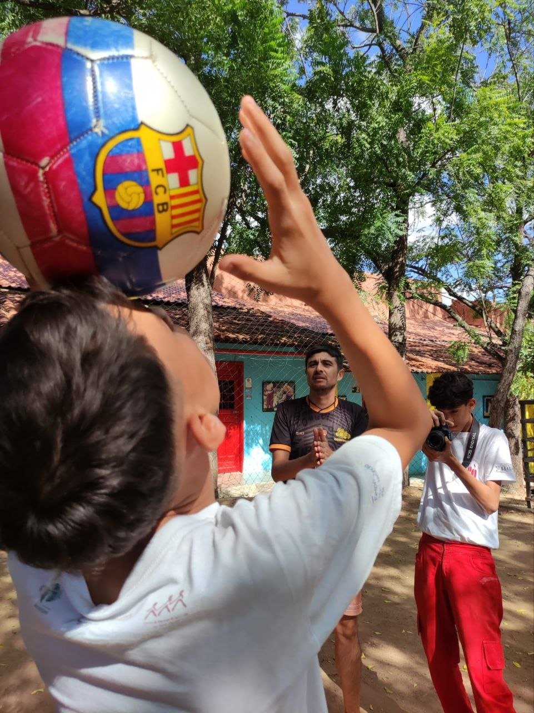

Imagem que explica sem legenda
Roda, chão, bola, projeção e banner. O conjunto comunica método antes do parágrafo.
prova 02 / imagem como linguagem
Esta prova testa imagens segundo contexto editorial. Não procura a foto mais bonita. Procura a imagem certa para cada pergunta.

01. Manifesto visual
02. Método em roda
03. Território e educação popular
04. Arquivo e prova institucional
manifesto
A imagem da palestra com camisas sustenta a tese da casa: a bola não entra como adorno esportivo. Ela entra como arquivo, fala, cena, memória e método.
Uso recomendado: home principal, abertura do manifesto, página de apresentação autoral.

método

Roda, chão, bola, projeção e banner. O conjunto comunica método antes do parágrafo.
Boa para seção de metodologia, post sobre A Bola Conecta, página de serviços formativos ou apresentação institucional.

arquivo e prova

